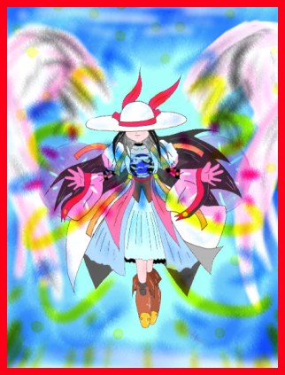

| 華代ちゃん：パニック・オフィス | 真城 悠 さん (Homepage) | （イラストなし） | 99/09/27 | 12 KB | 感想 |
| 【あらすじ】 一流商社に勤める豊川は、ある日奇妙な電話に遭遇した。 【コメント】 真城本人としてはちょっと久しぶりの「華代ちゃん」です。 | |||||
| 【推薦文】 今回の舞台はオフィス。見慣れたはずのオフィスの人間模様が、小さなセールスレディの出現により混乱のズンどこに！ | |||||
| 【ジャンル】 【種別】 変身 【属性】 【キーワード】 「華代ちゃん」 | |||||
| 華代ちゃん： 夢 | ウぇちヲ さん | （イラストなし） | 99/09/29 | 5 KB | 感想 |
| 【コメント】 はじめての作品ですので読んでみてください。 | |||||
| 【推薦文】 初登場、ウぇちヲさん。宇宙時代になっても華代ちゃんパワーは健在のようです。今回の「被害者」は一風変わってますよ。それは… | |||||
| 【ジャンル】 SF 宇宙 【種別】 変身 【属性】 【キーワード】 「華代ちゃん」 | |||||
| 華代ちゃん： 親友 | HIKU さん | （イラストなし） | 99/09/29 | 6 KB | 感想 |
| 【あらすじ】 親友が兄弟？ 恋人？ 姉妹？ に……？ 【コメント】 生まれてこの方初めて書いた小説です。 | |||||
| 【推薦文】 またまた初登場の作者さん、HIKUさんです。生まれて初めての小説とのことですが、よくできてますね。ショートショートですが、最後のオチが切れ味鋭くて良いです。 | |||||
| 【ジャンル】 SS 【種別】 変身 アイテム 【属性】 【キーワード】 「華代ちゃん」 | |||||
| 華代ちゃん： ある機動隊の一番長い日 | 真城 悠 さん (Homepage) | （イラストなし） | 99/09/30 | 6 KB | 感想 |
| 【あらすじ】 それはある事件の無い、退屈な日のことだった… 【コメント】 まだまだ続きます「コスプレ・シリーズ」 | |||||
| 【推薦文】 交通機動隊の猛者たちがぁぁ〜。ミニスカポリスにビバ。ところで、鬼の山崎隊長は「被害」にあったのかどうか、気になりますね〜。 | |||||
| 【ジャンル】 SS 【種別】 変身 【属性】 婦警さん 【キーワード】 「華代ちゃん」 | |||||
| 華代ちゃん： グランプリの娘 | 真城 悠 さん (Homepage) | （イラストなし） | 99/09/30 | 8 KB | 感想 |
| 【あらすじ】 東野はレースの勝利を夢見ていた。そして… 【コメント】 今回は「華代ちゃん」初の試みが？ | |||||
| 【推薦文】 「初の試み」の内容がすごいです。そうか、初だったか…(笑)。今回の犠牲者は犠牲度が高いですよ。「グランプリの娘」ってタイトルがキュートだなぁ。あ、PUFFYが元ネタなんだ。 | |||||
| 【ジャンル】 SS 【種別】 変身 【属性】 【キーワード】 「華代ちゃん」 | |||||
| 華代ちゃん： 高嶺の花 | 真城 悠 さん (Homepage) | （イラストなし） | 99/10/1 | 9 KB | 感想 |
| 【あらすじ】 今回は華代ちゃんが恋のキューピッドに？ 【コメント】 親切は罪 | |||||
| 【推薦文】 絶好調真城さんの華代ちゃんコスプレシリーズ最新作です。この作品読んで、ふと思ったんですけど「武富士のCM」をネタに華代ちゃんモノをどなたか書いてみません？ | |||||
| 【ジャンル】 SS 【種別】 変身 【属性】 【キーワード】 「華代ちゃん」 | |||||
| 華代ちゃん： 番台 | 真城 悠 さん (Homepage) | （イラストなし） | 99/10/1 | 6 KB | 感想 |
| 【あらすじ】 ある日、貧乏学生の尾崎は馴染みの番台に見知らぬ少女がいるのに気が付いた。 【コメント】 今回は純朴な学生の好奇心が悲劇を… | |||||
| 【推薦文】 女性に言わせると「そんなにええもんやないよ」という銭湯の女湯ですが、そこはそれ、やはり男にとっては永遠のロマンです。 | |||||
| 【ジャンル】 SS 【種別】 変身 【属性】 【キーワード】 「華代ちゃん」 | |||||
| 華代ちゃん： 水泳嫌い | 水谷秋夫 さん | （イラストなし） | 99/10/2 | 9 KB | 感想 |
| 【あらすじ】 水泳嫌いの少年が、体育の時間の直前、ひとり男子更衣室で佇んでいた。そこへ…… 【コメント】 ネタは、と言えば、アレです | |||||
| 【推薦文】 水谷さんの意見「（華代ちゃんシリーズでは）女性になる理由が些細であればあるほどいいと思う」というのはなるほど一つの考え方だと感心しました。「アレ」に困惑してしまう新米女の子というのも良いものです(^^;。 | |||||
| 【ジャンル】 SS 【種別】 変身 【属性】 【キーワード】 「華代ちゃん」 | |||||
| 華代ちゃん： 流刑星 | HIKU さん (Homepage) | （イラストなし） | 99/10/3 | 11 KB | 感想 |
| 【あらすじ】 華代ちゃん宇宙へ！ 忘れ去られた惑星が……？ 【コメント】 早くも２作目の発表でーす。 | |||||
| 【推薦文】 華代ちゃんin SFワールドといった感じの作品ですね。SFディティールが凝ってるところを見ると、HIKUさんはかなり年季の入ったSFファンなのではないでしょうか。 | |||||
| 【ジャンル】 SS SF 【種別】 変身 ナノテク 【属性】 【キーワード】 「華代ちゃん」 | |||||
| 華代ちゃん： 補充 | 真城 悠 さん (Homepage) | （イラストなし） | 99/10/4 | 24 KB | 感想 |
| 【あらすじ】 華代ちゃん史上最大の危機!? 【コメント】 筆が暴走して気が付いたらこんなんなってました。 | |||||
| 【推薦文】 | |||||
| 【ジャンル】 不条理 【種別】 変身 【属性】 ナース 【キーワード】 「華代ちゃん」 | |||||